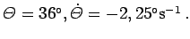

Inhalt Index DeskTop Bronstein

 Algebra und Diskrete Mathematik Fuzzy-Logik Wissensbasierte Fuzzy-Systeme Kognitive Systeme
Algebra und Diskrete Mathematik Fuzzy-Logik Wissensbasierte Fuzzy-Systeme Kognitive Systeme


Für die Menge X1 (Winkelwerte) seien sieben linguistische Terme, nämlich negativ groß (ng), negativ mittel (nm), negativ klein (nk), etwa Null (eN), positiv klein (pk), positiv mittel (pm) und positiv groß (pg) gewählt und entsprechend für die Eingangsgröße X2 (Werte der Winkelgeschwindigkeit).
Für die mathematische Modellierung muß jedem dieser linguistischen Terme eine Fuzzy-Menge über Graphen zugeordnet werden, wie es unter Fuzzy-Inferenz gezeigt wurde. Festlegung der Wertebereiche:
Die Startwerte sind in der Regel aktuelle Meßwerte, z.B. 